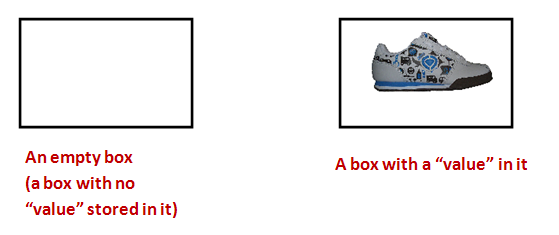

Module 4: Integers
Objectives (Real Numbers)
By the end of this module, for simple HelloWorld-like programs, you will be able to:
- Create variable declarations.
- Assign values to variables by simple assignment, and print them out.
- Distinguish between integers in strings versus actual integers.
- Demonstrate ability to perform operations on integers for a desired output.
- Simplify expressions with constants to single value.
- Evaluate expressions with variables in them.
- Convert English descriptions of operations into expressions.
- Mentally trace execution with expressions and calculations.
- Mentally trace expressions and calculations inside for-loops.
- Produce desired output using for-loops and calculations.
- Identify new syntactic elements related to the above.
And, once we’ve worked with integers, we’ll also do some “number crunching”.
Lecture video for for-loop with tracing
4.0 First, an analogy
Suppose we have boxes. Consider the following rules about “boxes”:
- Each box can store only one item.

- The possible things that can be stored inside are called values.
- Thus, at any given moment, a box’s value is whatever’s inside it.
- Each box has a unique name:

- There is a cloning process that works like this:

- The value inside one box is cloned.
- The cloned value is placed inside another.
- There is a strange shortcut notation to specify cloning:
- Here, the
=(equals sign) does NOT mean “equals.” - It has been repurposed to mean “clone”, “copy,” or, in programming-language jargon, “assign”.
- Here, the
- How to say it: “x is assigned the value in y”.
- Important: Remember, a box can hold only one value at a time.
- The technical term for our informal “box” is variable.
4.1 Integer variables
We’ll now start working with “boxes” (variables) that hold integers (whole numbers like 3, 17, 2097, but not numbers like 3.141).
Consider this program:
i = 5
print(i)- Now let’s examine key parts of this program:
- First,
iis the name of a “box” (of sorts). - The term used for “box” is variable.
⇒iis a variable. - To put something in a variable, we use assignment
⇒ with the repurposed=(equals) sign. - When we print a variable, what gets printed is its value.
⇒ Thus, the number5gets printed - Important: What you see on printed out is the number
5and NOT the letteri - Thus when you see
print(i)you should think:- “Hmmm, the print function is going to print the contents of variable i”.
- “I wonder what’s inside i?”
- “Let me look in the program to see what was the most recent value that got written into i”.
For example:
i = 5
i = 3
print(i)By way of explanation:
Thus: when you make a variable, you need to put something in it. - Next, let’s look at assignment between variables: - This is the analogue of cloning between “boxes”.
Consider this program:
i = 5
j = i # The value in i gets copied into j
print(j) # Prints 5- We say, in short, “
iis assigned toj”.
We’ve used comments above to annotate and explain.
- We’ll do this often, knowing that comments are not executed.
The above example illustrates that the value in i gets copied into the variable j, which means that the value 5 is still in the variable i.
A copied value does not change if the original is changed
For example, consider:
i = 5
j = i # j now has 5
i = 0 # We changed i here
print(j) # j still has 5- Here’s the line-by-line execution:
- The first line puts the value 5 in variable i.
- The second line copies the value in i (which is 5) into j. So j will have the value 5 as well.
- The third line replaces the value 5 with value 0.
- j still has 5, so the fourth line will print 5.
0 is an actual value, and is not “no value” or “nothing”.
4.7 Video
4.9 Video
4.2 Integer operators
Let’s examine the familiar arithmetic operators +, -, *, /
- Addition:
+ - Subtraction:
- - Multiplication:
* - Division:
/
Consider this example with addition:
i = 5
j = 6
k = i + j
print(k)- What happens during execution:
- The values in
iandjare added. - The resulting value goes into variable
k.
- The values in
- A long-ish way of saying this aloud:
⇒ “kis assigned the sum of the values ofiandj” - A shorter way:
⇒ “kis assignediplusj”
Here’s an example with multiplication and division:
i = 5
j = 6
k = i * j
print(k) # prints 30
m = i / j
print(m) # what does this print?
n = i // j
print(n) # what does this print?Integer division: - In math, we learned that 1/4 = 0.25 and 21/6 = 3.5.
This remains true in Python when we do something like
i = 21 j = 6 m = i / jOn the other hand, if we wish to perform integer division, we can use the integer division operator:
i = 21 j = 6 m = i // jThat is, the result is truncated down to the nearest integer.
- Example: 3 // 2 becomes 1 because 1.5 gets truncated to 1.
- Example: 15 // 4 becomes 3 because 3.75 gets truncated to 3.
Integer division is useful when we want to do integer arithmetic.
4.3 Expressions and operator-precedence
Consider the following program:
i = 5
j = 6
k = i*j - (i+1)*(j-1)
print(k)About expressions:
- An expression combines constants (like
1, above), and variables using operators. - Example:
i*j - (i+1)*(j-1). - The above expression is really equivalent to:
(i*j) - ((i+1) * (j-1)). Here, we added some clarifying parentheses. - Operator precedence allows us to reduce the number of clarifying parentheses.
- Python precedence follows standard precedence in math:
/, *, +, -. - You might remember the precedence via the acronyms BODMAS or PEMDAS. (Look it up.)
- The above expression is NOT the same as:
i*j - i+1*j-1. - Also, note the change of whitespace:
- We could have written
k = i * j - (i + 1) * (j - 1). - But
k = i*j - (i+1)*(j-1)is easier to read.
- We could have written
Let’s dive a bit deeper into precedence and do some examples:
- We’ll use the four operators: add or +, subtraction or -, multiplication or *, and division or /.
- We’ll use plain ol’ numbers to illustrate.
The key to working them out is to use extra parentheses in the right way.
- The PEMDAS rule:
- First apply Parentheses, then Exponents, then Multiplication and Division, and then Addition and Subtraction.
- Example: 3 + 2*4
- Here, we apply 2*4 to give 8
- Then do 3 + 8 to give 11.
- Applying extra parenthesis to 3 + (2*4) makes it clear.
- Example: 3(24/3-23)
- First, work out what’s inside the parens (the P of PEMDAS):
- Do div to 24/3 and mult to 2*3 to get (8 - 6)
- This gives (2)
- Now go out and see that we need to do 3*(2)
- Which gives 6.
- Using extra parens and spacing makes it clear: 3 * ( (24/3) - (2*3) )
- First, work out what’s inside the parens (the P of PEMDAS):
- Example: 1 + ( (4 - 1) * 8) / 6
- Do the innermost parens first: (4 -1) = 3
- Which results in 1 + (3 * 8) / 6
- Then the next parens to give: 1 + 24/6
- Then the D in PEMDAS: 1 + 4
- Result: 5
4.13 Video
4.4 More about expressions and assignment
The remainder operator:
- The expression 10 % 3 is “the remainder when 10 is divided by 3”.
- Thus 10 % 3 is 1.
- Similarly 11 % 4 is 3.
- The remainder operator is sometimes called modulo, as in “ten modulo 3 is 1”
Consider this example:
i = 14
j = -6
k = i % (-j)
print(k)One way to know whether one number cleanly divides another is to apply the % (remainder) operator.
Consider this program:
j = 10
for i in range(1, j):
k = j % i
print(k)- In the above exercise we systematically obtained the remainder when dividing 10 (the value of j) by every possible number less than 10.
- Whenever the output is 0 in some iteration, we know 10 % i is 0 for that iteration.
- This means i divides 10 cleanly (with no remainder).
- For example 10 % 5 is 0.
- Whenever a number j has nothing less than j that divides j cleanly, the number is called a prime number.
- Examples of prime numbers: 7 and 11.
- Examples of non-prime numbers: 10 and 15
- The notion of a prime number may seem like an esoteric topic, suitable for a dinner conversation with mathematicians. But it turns out to have immense practical value: much of cryptography is based on properties of numbers that can be cleanly divided by only two prime numbers.
4.16 Video
Now we’ll look at a strange (initially) but very useful type of assignment:
Consider this program:
i = 8
i = i + i/2
print(i)- Prior to evaluating the expression,
ihas value8. - On the right side, the current value of
iis used to evaluate the expression.
⇒ Thus, the expression evaluates to(8 + 8/2) = 12. - This evaluated value then goes into variable
i.
⇒ After the assignment,ihas the value12.
Let’s use this to compute the sum of numbers from 0 to 10:
s = 0
for i in range(0, 11):
s = s + i
print(s)Trace the changing values of s in the above program using the following kind of table: 
There is nothing to submit in this exercise, but it is highly recommended that you complete the tracing exercise using a spreadsheet or a document.
In this and other tracing exercises involving a table, you can simply draw the table by hand and include a picture. (That is, you don’t have to spend time on making tables inside Word.)
Consider this program:
N = 5
s = 0
for i in range(1, N+1):
s = s + (2*i - 1)
print(s)- The program prints the sum of the first N odd numbers.
- Recall from earlier that as i goes through 1, 2, 3, … (2*i-1) evaluates as successive odd numbers 1, 3, 5, …
4.19 Video
4.5 Problem solving and pseudocode
Suppose we were given the following problem: write a program to print the first N odd numbers.
We’ll solve it in the following steps:
First, let’s sketch out a “program-like” outline (not a real program):
N = 10 for i ranging from 1 to N: Calculate the i-th odd number Print itThis kind of rough outline is called pseudocode
⇒ We’re meant to do this on paper, prior to programming.Pseudocode looks a little like code, but is half-English.
For any given
i, thei-th odd number is:
2*i - 1.Now let’s put this together into a program:
N = 10 for i in range(1, N+1): k = (2*i - 1) print(k)
4.6 A problem-solving example with variables and nested for-loops
We’ll solve the following problem: for any given n, compute
1 + 21 + 22 + 23 + … + 2n
That is, the sum of consecutive powers of 2.
As a first step, let’s see if we can use a loop to compute a single power of 2:
Suppose we wish to compute 2k for some k.
We know that
2k = 222 … *2 (k times)Thus, what we could is:
Start with p = 1
Multiply by 2: p = p * 2
Multiple that result by 2: p = p * 2
… etcIn pseudocode:
p = 1 for i ranging from 1 to k: p = p * 2Let’s put this into code and test:
k = 10 p = 1 for i in range(1, k+1): p = p * 2 print(p)
4.22 Video
Next, let’s look at pseudocode for the sum of powers (our original problem):
s = 1 for k ranging from 1 to n: Compute k-th power of 2 Accumulate in s Print sNow, let’s put this all together:
n = 5 s = 1 for k in range(1, n+1): p = 1 for i in range(1, k+1): p = p * 2 s = s + p print(s)Let’s point out a few things.
- First, let’s have our eyes look over the outer-loop and not focus on the details of the inner loop:

- Now look inside the body of the outerloop:

- Try to get a feel for how it executes by looking at the first iteration of the outerloop:

- First, let’s have our eyes look over the outer-loop and not focus on the details of the inner loop:
4.24 Video:
Add 1 to the sum-of-powers of 2.
4.7 Shortcut operators
Recall the integer-sum program:
s = 0
for i in range(0, 11):
s = s + i
print(s)We can write this using the “shortcut addition” operator += as follows:
s = 0
for i in range(0, 11):
s += i
print(s)Thus, s += i is the same as s = s + i
One can read s += i as “add i to what’s already in s, and store the result in s”.
This can be applied to the other operators as well:
s -= i # Same as s = s - i
p *= 2 # Same as p = p * 2
d /= 2 # Same as d = d / 24.8 When things go wrong
As you might imagine, there are many ways to inadvertently create errors.
In each case below, first try to identify the error just by reading. Then, type up the program to confirm.
We’ll now see a different kind of error:
n = 5
for i in range(1, n+1):
k = n / (n - i)
print(k)The above is an example of a runtime error:
- The code itself is correctly written in that there are no issues with breaking the rules of the language.
- However, when i is 0, you can’t divide by 0.
- This causes a runtime error, meaning the program runs fine until the particular occurence of divide-by-zero.
4.9 A peek at the future
Let’s now revisit some earlier code hello_gui.py and apply what’ve learned about integers, arithmetic, and for-loops: 
Next, consider this program that uses a for-loop to plot points:
from drawtool import DrawTool
import math
dt = DrawTool()
dt.set_XY_range(0,10, 0,10)
for i in range(0, 6):
j = 2*i + 1
dt.draw_point(i, j)
dt.display()Let’s point out:
Let’s focus on the parts we recognize (the for-loop):

- So, when i is 0, j is calculated as 1
- This plots the point (0,1).
- Then, when i is 1, j becomes 3, which results in the point (1,3).
- … and so on.
The points are the dots shown in the plot.
When you downloaded
drawtool.py, you downloaded another Python program into the same folder.- This is a program that provides drawing and plotting features.
- We’ve used one of its features here (plotting points), and will use
drawtool.pyagain in the future.
Notice that the plotted points are along a straight line, implying a linear relationship between i and j.
We will occasionally write programs that work with numbers and quantitative concepts. As a result, we’ll encounter mathematical ideas in a different way, through programming.
4.10 Meta
Another in our series of occasional “meta” sections that will step back from the material to comment on how we can learn better.
This was a loooong module with lots of exercises and details. Let’s review:
- We introduced the all-important concept of a variable along with the sense that there’s a “place” in the computer for each variable.
⇒ The “place” is really in the memory (also called RAM) of the computer. - Along with variables is the notion of assignment, which means “copying the value in one variable into another variable”.
Assignments are amongst the most common of statements in everyday code.
- When a variable is of a numeric type like integers, we also need to go over basic operators and show examples.
- Further complications arose when the operators have variations.
- Since we were on the topic of integers, we took this opportunity to learn how to do some number-crunching.
- When we got to nested loops, it got tricky following the values of variables through multiple nested loops.
So, if you felt a bit overwhelmed, that’s perfectly understandable. If you have to go back to some of the material to review or try some exercises again, that’s fine. You’re going to get better at this!